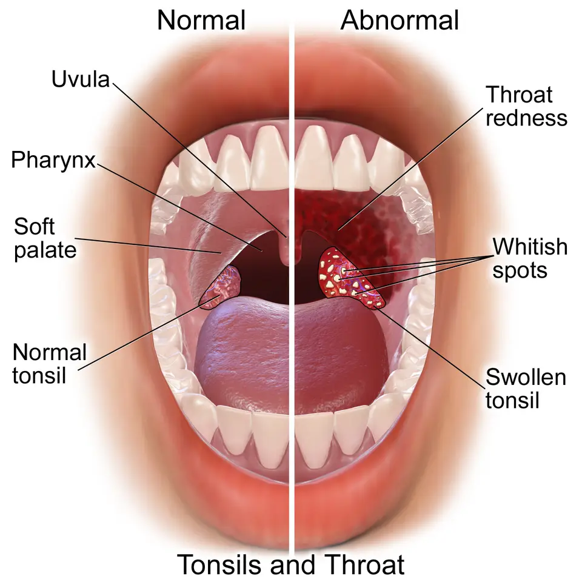

DX.8 — Abcès périamygdalien 🚩 E1
L'abcès périamygdalien est l'infection profonde du cou la plus fréquente, et il se complique parfois d'une obstruction des voies aériennes ou d'une médiastiniteS1. Le médecin le reconnaît à une angine qui se latéralise, avec bombement du voile, luette déviée et trismusS1. Il adresse alors le patient sans délai à l'oto-rhino-laryngologiste (ORL) pour un drainageS1.
1. Définition
Le service d'ORL du Centre hospitalier universitaire vaudois (CHUV) définit l'abcès périamygdalien comme une accumulation de pus dans l'espace périamygdalienS1. Cet espace se situe entre la capsule de l'amygdale palatine et le muscle constricteur supérieur du pharynxS1S8. Le phlegmon périamygdalien désigne la même localisation lorsque la réaction reste inflammatoire, sans pus collecté, ce qui le distingue de l'abcèsS1. Les auteurs rangent l'abcès parmi les complications de l'amygdalite aiguë, au même titre que le phlegmon qui le précède souventS1S8.
2. Épidémiologie (Suisse, puis Europe)
L'abcès touche surtout les adolescents et les jeunes adultes, et les auteurs vaudois le décrivent comme l'infection profonde du cou la plus fréquenteS1. La Suisse ne publie pas d'incidence nationale ; les séries hospitalières de Bâle, Genève et Lausanne donnent toutefois des ordres de grandeur utilesS6S3S5. Les chiffres suisses et européens, les facteurs de risque et l'effet des politiques d'antibiotiques et de chirurgie expliquent qui consulte et pourquoi. La répartition selon les saisons complète ce tableau, car elle diffère selon le germe en causeS8.
Chiffres utiles : Suisse, puis Europe
| Donnée | Valeur | Population et année | Source |
|---|---|---|---|
| Abcès recensés dans deux hôpitaux régionaux, angines sans streptocoque A | 141 cas | Suisse alémanique, janvier 2015 à juin 2018 | S6 |
| Abcès confirmés parmi les suspicions cliniques adressées aux urgences | 117 sur 133, soit 88 % | Genève, Hôpitaux universitaires de Genève (HUG), novembre 2020 à octobre 2022 | S3 |
| Âge moyen des adultes suspects d'abcès | 33 ans, 77 hommes sur 133 | Genève, HUG, 2020-2022 | S3 |
| Enfants de moins de 18 ans traités pour un abcès | 107, dont 93 sans chirurgie | Lausanne, CHUV, 2004-2014 | S5 |
| Cas annuels d'abcès | Environ 2000 | Danemark, estimation nationale | S8 |
| Incidence annuelle avant puis après le confinement | 21,8 puis 14,9 pour 100 000 habitants | Aarhus, Danemark, 2018-2022 | S11 |
| Abcès après une amygdalite | 32,4 sans antibiotique et 41,1 avec antibiotique, pour 10 000 épisodes | Comté de Stockholm, 2006-2016 | S13 |
| Incidence annuelle | 30 pour 100 000 habitants | États-Unis, chiffre cité par le CHUV | S1 |
La série genevoise montre qu'un ORL adresse rarement à tort un patient au scanner, puisque presque neuf suspicions sur dix se confirmentS3. Les HUG ont recruté ces patients aux urgences, ce qui explique la forte proportion d'abcès vrais dans cette population sélectionnéeS3.
Âge, sexe, tabac et dents : les terrains à risque
Les adolescents et les jeunes adultes forment la population la plus touchée, et les hommes semblent prédominer sur les femmesS8. La thèse danoise d'Aarhus a étudié 847 patients et associe le tabagisme à un risque accru d'abcès, dans les deux sexes et à tout âgeS8. L'équipe lausannoise ajoute l'amygdalite bactérienne aiguë et l'infection périodontale concomitante aux facteurs de risque connusS1.
Cette répartition oriente l'interrogatoire : un jeune fumeur avec une angine qui empire mérite une inspection attentive du voileS1S8. Le même auteur danois recommande une vigilance particulière chez les patients de 15 à 24 ans qui présentent une amygdalite avec signes d'atteinte périamygdalienne débutanteS8.
Moins d'antibiotiques, moins d'amygdalectomies : quel effet ?
À Stockholm, l'usage des antibiotiques respiratoires a baissé de 22 % entre 2006 et 2015 sans hausse significative des abcès périamygdaliensS13. En Angleterre, l'incidence des abcès a augmenté de 1,7 fois depuis la directive écossaise SIGN (Scottish Intercollegiate Guidelines Network) qui restreint l'amygdalectomieS14.
Le confinement danois de 2020 a fait baisser l'incidence et la part du streptocoque du groupe A (SGA), ce qui suggère une transmission directe de ce germeS11. Les abcès à Fusobacterium necrophorum sont restés stables pendant cette période, et les auteurs les relient plutôt à un déséquilibre de la floreS11.
Saisons et germes
Sur 1620 abcès du comté d'Aarhus entre 2001 et 2006, la variation saisonnière globale de l'incidence n'était pas significativeS8. Les abcès à SGA prédominaient pourtant en hiver et au printemps, alors que ceux à Fusobacterium necrophorum se répartissaient plus également sur l'annéeS8.
Cette différence rejoint l'observation du confinement danois, pendant lequel seuls les abcès à SGA ont nettement diminuéS11. Le médecin ne peut donc pas exclure un abcès en été, car le germe anaérobie le plus fréquent circule toute l'annéeS8S12.
3. Physiopathologie
L'infection naît dans l'amygdale, puis franchit sa capsule et se collecte le plus souvent en regard du pôle supérieurS1S10. Le pus repousse alors le voile du palais et la luette vers le côté sain, puis l'inflammation peut gagner les muscles masticateurs voisinsS1. La loge périamygdalienne en image, le rôle des glandes de Weber, la flore polymicrobienne et les voies d'extension détaillent ce mécanisme. Le cas particulier de Fusobacterium necrophorum explique pourquoi ce germe anaérobie oriente le choix de l'antibiotiqueS8.
La loge périamygdalienne sur un schéma en couleurs
Amygdales normales et amygdalite. Ce schéma publié de Blausen Medical montre la gorge normale à gauche et une gorge enflammée à droiteS23.

Le lecteur doit repérer d'abord seul le voile, la luette et chaque amygdale avant de lire les numéros.
La copie annotée de « Amygdales et voile du palais » numérote les repères que la lecture guidée explique ci-dessous.
- 1. Le voile du palais forme le toit de la loge : c'est lui qui bombe au-dessus de l'amygdale lorsqu'un abcès se constitueS1.
- 2. La luette reste médiane à l'état normal ; dans l'abcès, elle est déviée du côté opposé à la collectionS1.
- 3. L'amygdale normale reste contenue dans sa loge, et sa capsule sépare le tissu lymphoïde de l'espace périamygdalienS1S23.
- 4. L'amygdale enflammée grossit et porte des dépôts ; une amygdalite de ce type précède souvent l'abcès de quelques joursS10S23.

Amygdalite ou glandes de Weber : deux hypothèses réunies
Une revue danoise de 2016 confronte l'hypothèse de l'amygdalite aiguë compliquée à celle d'une infection des glandes salivaires de WeberS10. Plusieurs arguments soutiennent l'amygdalite : les mêmes germes se retrouvent dans le pus et dans les deux amygdales, et les signes d'angine précèdent l'abcèsS10.
D'autres faits plaident pour les glandes de Weber, car le pus contient beaucoup d'amylase et la collection siège surtout au pôle supérieurS10. Les auteurs proposent donc une hypothèse unifiée : les bactéries infectent la muqueuse amygdalienne, puis gagnent l'espace périamygdalien par les canaux salivairesS10.
Une flore aérobie et anaérobie
| Germe | Fréquence rapportée | Population | Source |
|---|---|---|---|
| Fusobacterium necrophorum | 33 % des abcès | Skåne, Suède, 637 patients, 2016-2020 | S12 |
| Streptocoque du groupe A | 28 % des abcès | Skåne, Suède, 637 patients | S12 |
| Streptocoques des groupes C et G | 6 % des abcès | Skåne, Suède, 637 patients | S12 |
| Fusobacterium necrophorum | 23 % des cultures de pus | Aarhus, Danemark, 847 patients, 2001-2006 | S8 |
| Streptocoque du groupe A | Environ 20 % des patients | Synthèse danoise | S8 |
L'infection est en général polymicrobienne, et lorsqu'un seul germe est retrouvé, il s'agit surtout du SGA ou de Fusobacterium necrophorumS1. La part des anaérobies augmente selon les auteurs vaudois, ce qui impose une antibiothérapie couvrant à la fois les aérobies et les anaérobiesS1.
Comment l'abcès s'étend
L'infection peut gagner la muqueuse des voies aériennes supérieures, traverser les espaces cervicaux ou diffuser par voie sanguineS9. Une revue de 2020 décrit dix-sept complications, dominées par la médiastinite descendante, l'abcès para- ou rétropharyngé, la fasciite nécrosante et le syndrome de LemierreS9.
Dans une série danoise de 63 abcès parapharyngés, 33 patients présentaient aussi un abcès périamygdalien, soit 52 %S8. Ce lien étroit explique pourquoi une tuméfaction du pilier postérieur ou du cou doit faire chercher une extension parapharyngéeS1S8.
Fusobacterium necrophorum : un pathogène, pas un simple passager
Dans une étude prospective danoise de 36 abcès, Fusobacterium necrophorum était présent dans 58 % des aspirations de pusS8. Il était retrouvé dans 56 % des amygdales des patients avec abcès, contre 24 % chez les témoins opérés à froidS8.
Huit patients sur onze porteurs de ce germe ont développé des anticorps spécifiques, ce qui plaide pour un rôle pathogène réelS8. Les patients infectés présentaient aussi une protéine C réactive et des neutrophiles plus élevés que ceux infectés par d'autres bactériesS8.
La recherche de virus par amplification génique n'a pas montré de rôle viral dans l'abcès, hormis une association rare avec le virus d'Epstein-BarrS8.
4. Démarche diagnostique : les graves d'abord
Devant une angine qui se latéralise, le médecin élimine d'abord ce qui menace la vie : l'obstruction des voies aériennes, l'extension cervicale profonde et le sepsisS1S9. Il pense ensuite au diagnostic fréquent, l'abcès ou le phlegmon, puis aux diagnostics rares qui l'imitentS1. Le tableau des diagnostics graves, les imitateurs de l'abcès et le piège du cancer surinfecté ordonnent cette réflexion. Le syndrome de Lemierre mérite une fenêtre à part, car il frappe des sujets jeunes après une angine banaleS9S8.
Les diagnostics graves d'abord
| Diagnostic | Indice clinique | Conduite immédiate | Source |
|---|---|---|---|
| Obstruction des voies aériennes | Dyspnée, stridor, salive non avalée | Position assise, oxygène, transfert médicalisé vers ORL et anesthésie | S1S7 |
| Abcès parapharyngé ou rétropharyngé | Torticolis, tuméfaction cervicale, pilier postérieur bombé | Scanner injecté et avis ORL urgent | S1S7 |
| Médiastinite descendante | Extension cervicale profonde vers le thorax | Prise en charge pluridisciplinaire urgente | S1S9 |
| Syndrome de Lemierre | Diffusion de l'infection par voie sanguine | Recherche active si le patient ne s'améliore pas | S9S8 |
| Fasciite nécrosante cervicale | Extension aux tissus du cou | Avis chirurgical urgent | S9 |
Les complications se déclarent souvent en même temps que l'abcès, dans 59 % des cas de la revue danoise, et non seulement après son traitementS9. Les hommes et les patients de plus de 40 ans semblent plus exposés aux formes compliquées, ce qui justifie un seuil d'imagerie plus bas chez euxS9.
Les imitateurs de l'abcès
| Diagnostic | Ce qui le distingue | Source |
|---|---|---|
| Phlegmon périamygdalien | Clinique proche, mais ponction négative et aucune collection au scanner | S1 |
| Épiglottite | Évolution plus rapide, surtout chez l'enfant | S1 |
| Abcès rétropharyngé | Pas de trismus, amygdales symétriques, torticolis au premier plan | S1 |
| Abcès parapharyngé | Tuméfaction du pilier postérieur | S1 |
| Amygdalite virale sévère (DX.1) | Atteinte bilatérale et aphagiante, sans bombement unilatéral du voile | S1 |
| Angine de Plaut-Vincent | Ulcération amygdalienne unilatérale, enduit gris nécrotique, peu de signes généraux | S1 |
Le trismus et la déviation de la luette orientent vers l'abcès, mais aucun signe isolé ne suffit à trancher, comme le montre l'étude genevoiseS1S3.
Un cancer peut se déguiser en abcès
Une néoplasie oropharyngée surinfectée peut mimer un abcès périamygdalien, surtout chez un patient qui fume ou boit régulièrement de l'alcoolS1. Le CHUV envoie donc systématiquement l'amygdale retirée en analyse anatomopathologique pour exclure une tumeur sous-jacenteS1.
Une angine qui persiste malgré un antibiotique adéquat doit aussi faire chercher une cause tumorale, que le DX.9 détailleS1.
Syndrome de Lemierre et autres complications rares
La revue danoise de 2020 compte 35 syndromes de Lemierre parmi les complications publiées de l'abcès périamygdalienS9. La thèse d'Aarhus mentionne aussi l'érosion de l'artère carotide interne, l'abcès cérébral et le choc toxique streptococciqueS8.
| Complication | Cas publiés | Source |
|---|---|---|
| Médiastinite descendante | 113 | S9 |
| Abcès para- ou rétropharyngé | 96 | S9 |
| Fasciite nécrosante | 38 | S9 |
| Syndrome de Lemierre | 35 | S9 |
Ces chiffres décrivent des cas publiés et non une fréquence, si bien qu'ils mesurent la gravité possible plutôt que le risque individuelS9.
5. Anamnèse ciblée et drapeaux rouges
Le patient décrit une odynodysphagie sévère qui se latéralise progressivement du côté de l'abcès, avec fièvre et altération de l'état généralS1. Une otalgie réflexe du même côté, une voix étouffée et une difficulté à ouvrir la bouche complètent souvent le tableauS1S7. Les questions ciblées, les drapeaux rouges et les particularités de l'enfant structurent l'anamnèse.
Questions ciblées et ce qu'elles cherchent
| Question | Réponse évocatrice | Ce qu'elle cherche | Source |
|---|---|---|---|
| La douleur prédomine-t-elle d'un côté ? | Oui, de plus en plus | Collection unilatérale | S1S6 |
| Avalez-vous votre salive ? | Non, ou avec grande peine | Odynodysphagie sévère, menace respiratoire | S1S6 |
| Pouvez-vous ouvrir la bouche ? | Ouverture limitée | Trismus | S1 |
| La voix a-t-elle changé ? | Voix de patate chaude | Masse oropharyngée | S1 |
| Avez-vous mal à l'oreille du même côté ? | Oui | Otalgie réflexe | S1S7 |
| Respirez-vous moins bien ? | Oui | Obstruction des voies aériennes | S6S1 |
| Prenez-vous un antibiotique ou un anticoagulant ? | Oui | Échec thérapeutique, choix du drainage | S1 |
| Fumez-vous ? Avez-vous un problème dentaire ? | Oui | Terrain favorisant | S1S8 |
Les questions sur les anticoagulants et les comorbidités préparent déjà le choix entre amygdalectomie et incision sous anesthésie locale (point 11)S1.
Drapeaux rouges et ce qu'ils imposent
Dans une étude cas-témoins bâloise, la difficulté à avaler multiplie par 18,4 les chances d'abcès et la dyspnée par 10,2S6. Des signes et symptômes unilatéraux multiplient ces chances par 146, ce qui en fait le meilleur indice d'un abcès lorsque le test streptococcique est négatifS6.
| Drapeau rouge | Risque visé | Action | Source |
|---|---|---|---|
| Dyspnée, stridor, salive non avalée | Obstruction des voies aériennes | Transfert médicalisé, sans examen forcé | S1S6 |
| Torticolis ou tuméfaction cervicale | Abcès parapharyngé ou rétropharyngé | Scanner injecté en urgence | S1S7 |
| Extension cervicale profonde suspectée | Médiastinite | Urgence pluridisciplinaire | S1 |
| Trismus sévère empêchant l'examen | Collection inaccessible à la vue | Scanner cervical injecté | S1 |
| Fièvre persistante après drainage | Lemierre ou extension | Réévaluation et imagerie | S1S9 |
Chez l'enfant
Le trismus reste rare chez l'enfant atteint d'abcès, alors qu'il est quasi constant chez l'adulte, ce qui rend le diagnostic pédiatrique plus difficileS1. La série lausannoise montre que les enfants plus âgés et ceux qui ont une détresse respiratoire ou un trismus échouent plus souvent au seul traitement antibiotiqueS5.
Le médecin interroge donc les parents sur la respiration, la salivation et la prise de liquides, plutôt que sur l'ouverture buccaleS1S5.
6. Examen physique ciblé, région par région
L'examen commence par la respiration et la posture, puis inspecte la bouche à la lumière, et se termine par la palpation du couS1S7. Chaque région est détaillée dans sa fenêtre : voies aériennes et état général, oropharynx, mâchoire et cou. La photographie commentée entraîne l'œil à repérer le bombement unilatéral du voile.
Région 1 — Voies aériennes et état général
Le médecin observe d'abord la respiration, la voix et la salive, car une obstruction des voies aériennes figure parmi les complications graves de l'abcèsS1. Une dyspnée ou une stase salivaire impose donc, par prudence, un transfert médicalisé sans examen forcé de la boucheS1S7.
La fièvre et l'altération de l'état général accompagnent habituellement l'abcès, et un sepsis oriente vers une complicationS1S9.
Région 2 — Oropharynx
L'inspection montre une tuméfaction unilatérale et érythémateuse du voile du palais, avec un pilier antérieur tuméfiéS1. La luette est déviée du côté controlatéral, et l'équipe genevoise décrit aussi une contraction asymétrique du voileS1S2.
L'équipe genevoise réunit ces signes avec la voix de patate chaude et le trismus, mais elle les juge seulement fréquents, jamais constantsS2. Une tuméfaction du pilier postérieur oriente plutôt vers un abcès parapharyngé, qui demande un scannerS1.
Région 3 — Mâchoire et ouverture buccale
Le trismus résulte de l'inflammation et du spasme des muscles masticateurs, ptérygoïdiens et temporaux du même côtéS1. Les auteurs vaudois le jugent pathognomonique chez l'adulte, mais il reste rare chez l'enfantS1.
Un trismus sévère qui empêche de voir l'oropharynx justifie un scanner cervical injecté plutôt qu'une ponction à l'aveugleS1.
Région 4 — Cou
La palpation permet de retrouver une lymphadénopathie cervicale ipsilatérale douloureuse, habituelle dans l'abcès périamygdalienS1. Une tuméfaction cervicale, un torticolis ou un œdème laryngé évoquent en revanche une extension para- ou rétropharyngéeS7S1.
Une fièvre qui persiste après le drainage fait chercher une diffusion hématogène, dont le syndrome de Lemierre fait partieS9.
Abcès périamygdalien droit : lecture guidée
Abcès périamygdalien droit. Cette photographie clinique publiée sous licence libre montre un abcès périamygdalien du côté droit du patientS22.

Le lecteur doit chercher d'abord seul l'asymétrie du voile et la position de la luette.
La copie annotée de « Abcès périamygdalien droit » numérote les repères que la lecture guidée explique ci-dessous.
- 1. Le voile du palais du côté droit du patient bombe et rougit au-dessus de l'amygdale, à l'endroit visé par la ponctionS1S22.
- 2. La luette est refoulée vers le côté gauche du patient, c'est-à-dire du côté opposé à l'abcèsS1.
- 3. Le côté gauche du patient garde un voile plat, ce qui fait ressortir l'asymétrieS1.
- 4. L'abaisse-langue dégage l'oropharynx ; l'examen reste doux, car un trismus limite souvent l'ouvertureS1.

7. Approche syndromique
L'approche syndromique part de la latéralité et du siège de la tuméfaction, puis cherche le signe qui oriente vers un compartiment précisS1. La grille des syndromes et la frontière entre phlegmon et abcès évitent les deux erreurs : drainer un phlegmon ou laisser un abcès. La mononucléose infectieuse reste un piège fréquent, car elle donne une angine sévère et parfois aphagianteS1.
Grille des syndromes pharyngés aigus
| Syndrome | Signes clés | Diagnostic le plus probable | Source |
|---|---|---|---|
| Angine bilatérale fébrile | Amygdales symétriques, dépôts possibles | Pharyngite aiguë (DX.1) | S1 |
| Angine unilatérale avec bombement du voile | Luette déviée, trismus, voix étouffée | Abcès ou phlegmon périamygdalien | S1 |
| Torticolis sans trismus | Amygdales symétriques | Abcès rétropharyngé | S1 |
| Bombement du pilier postérieur | Douleur cervicale latérale | Abcès parapharyngé | S1 |
| Ulcération unilatérale grise | Peu de signes généraux, infection dentaire | Angine de Plaut-Vincent | S1 |
| Lésion persistante sous antibiotique | Tabac, alcool | Carcinome oropharyngé (DX.9) | S1 |
La latéralité reste le pivot de cette grille, car les signes unilatéraux sont les plus fortement associés à l'abcès dans l'étude bâloiseS6.
Phlegmon ou abcès ?
Le phlegmon et l'abcès partagent la même clinique, ce qui rend impossible leur distinction à l'œil nuS1. Dans le phlegmon, la ponction du voile reste négative et le scanner cervical ne montre aucune collectionS1.
Le phlegmon évolue favorablement sous antibiothérapie intraveineuse, parfois avec une corticothérapie dont l'usage reste controverséS1. L'abcès, lui, exige un drainage, ce qui fait de la recherche du pus l'étape décisive du diagnosticS1.
Mononucléose ou abcès ?
La mononucléose donne des amygdales symétriquement congestionnées, avec des adénopathies spinales bilatérales et parfois une hépatosplénomégalieS1. Elle reste donc bilatérale, alors que l'abcès se latéralise et bombe d'un seul côtéS1.
L'association entre le virus d'Epstein-Barr et l'abcès concerne environ 4 % des cas dans les études antérieures citées par KlugS8. Ce diagnostic compte pour la prescription, car l'amoxicilline provoque un exanthème chez plus de 90 % des patients atteints de mononucléoseS18S1.
8. Diagnostic positif et critères
Le diagnostic positif repose sur la présence de pus, obtenue par ponction du voile tuméfié ou montrée par une collection au scanner injectéS1. Les critères retenus au CHUV et la performance des signes et des examens montrent pourquoi l'œil clinique ne suffit pas.
Critères diagnostiques
| Élément | Ce qu'il montre | Valeur diagnostique | Source |
|---|---|---|---|
| Ponction à l'aiguille du voile | Pus | Confirme l'abcès et indique le drainage | S1 |
| Ponction négative | Absence de pus | Fait suspecter un abcès postérieur ou inférieur | S1 |
| Scanner cervical injecté | Hypodensité centrale entourée d'un rehaussement périphérique | Montre la collection et son extension | S1 |
| Clinique seule | Bombement, luette déviée, trismus | Oriente sans prouver | S3 |
Le CHUV réserve le scanner aux ponctions négatives et aux trismus sévères, alors que l'équipe genevoise le propose comme examen de choix lorsqu'il est disponibleS1S3.
Performance des signes et des examens
| Test | Sensibilité | Spécificité | Population | Source |
|---|---|---|---|---|
| Signes cliniques isolés | 19,7 à 73,5 % | 12,5 à 93,8 % | Genève, 133 adultes | S3 |
| Scanner injecté | 95,7 % | 75 % | Genève, 133 adultes | S3 |
| Échographie, toutes techniques | 86 % | 76 % | Méta-analyse, 17 études, 812 patients | S15 |
| Échographie endobuccale | 91 % | 75 % | Même méta-analyse | S15 |
| Échographie transcervicale | 80 % | 81 % | Même méta-analyse | S15 |
Même examinés par un ORL, les signes cliniques réunis n'atteignent qu'une aire sous la courbe de 0,677, ce qui justifie l'imagerieS3. L'échographie sert surtout à écarter l'abcès grâce à sa sensibilité, mais sa spécificité modérée ne permet pas de l'affirmer seuleS15.
9. Examens complémentaires
Les examens servent à trouver le pus, à mesurer l'extension et à identifier les germes, et non à remplacer l'avis ORLS1. La ponction, l'imagerie, la biologie sanguine et la microbiologie du pus répondent chacune à une question précise. Le tableau d'aide au choix indique quel examen demander selon la situation cliniqueS1S3S15.
La ponction à l'aiguille
Au CHUV, le diagnostic repose sur une ponction à l'aiguille en regard de la tuméfaction du voile, à la recherche de pusS1. Une ponction positive conduit au drainage chirurgical le jour même, et le pus prélevé part en analyse microbiologiqueS1.
Une ponction négative ne clôt pas le diagnostic : elle fait suspecter un abcès postérieur ou inférieur et conduit au scannerS1.
Scanner et échographie
Le scanner cervical injecté montre l'abcès sous forme d'une hypodensité centrale entourée d'un rehaussement hyperdenseS1. Il précise aussi l'extension vers les espaces para- et rétropharyngés, que l'examen de la bouche ne peut pas voirS1S8.
L'échographie endobuccale ou transcervicale offre une alternative sans irradiation, utile pour écarter l'abcès lorsque l'examen reste douteuxS15. Ses performances varient selon l'opérateur, puisque l'échographie faite par un radiologue est plus sensible que l'échographie au lit du patientS15.
Biologie sanguine
Le bilan comprend une formule sanguine simple et une chimie, qui montrent en général un syndrome inflammatoire élevéS1. La protéine C réactive (CRP) et les leucocytes s'élèvent davantage dans l'abcès, mais ils discriminent mal l'abcès d'une angine simpleS6.
Ce bilan sert donc à juger la gravité et à préparer l'anesthésie, et non à poser le diagnosticS1S6.
Microbiologie du pus
La culture du pus révèle souvent un mélange de germes aérobies et anaérobies, ce qui complique l'identification du pathogène responsableS8. Le chercheur danois recommande une gélose sélective pour Fusobacterium necrophorum, car ce germe fréquent est sinon manquéS8.
En Suède, Fusobacterium necrophorum était le seul germe associé aux complications précoces et tardives, ce qui rend son identification utile au suiviS12.
Quel examen dans quelle situation ?
| Situation | Examen utile | Raison | Source |
|---|---|---|---|
| Bombement net du voile, ouverture buccale possible | Ponction à l'aiguille par l'ORL | Prouve le pus et prépare le drainage | S1 |
| Trismus sévère, oropharynx invisible | Scanner cervical injecté | Montre la collection sans examen buccal | S1 |
| Ponction négative malgré une forte suspicion | Scanner cervical injecté | Cherche une collection postérieure ou inférieure | S1 |
| Examen par un non-spécialiste, scanner disponible | Scanner cervical injecté | Sensibilité de 95,7 % contre des signes cliniques peu fiables | S3 |
| Suspicion faible, besoin d'écarter l'abcès | Échographie | Bonne sensibilité, spécificité moyenne | S15 |
| Tuméfaction cervicale ou torticolis | Scanner cervical injecté | Recherche d'une extension para- ou rétropharyngée | S1S7 |
Le tableau montre que le scanner revient dans presque toutes les situations douteuses, alors que la ponction reste le geste du spécialisteS1S3.
10. Arbre décisionnel
L'arbre décisionnel est tiré de l'algorithme du service d'ORL du CHUV : signes d'alerte, trismus, ponction, scanner, puis choix du drainageS1. Une aggravation respiratoire à n'importe quel nœud renvoie au premier, qui prime sur tous les autresS1S7.
Arbre décisionnel de l'abcès périamygdalien
- Si le patient présente dyspnée, stridor ou salive non avalée, alors il part en transfert médicalisé vers ORL et anesthésieS1S7.
- Si la douleur reste bilatérale sans bombement du voile, alors le médecin traite une amygdalite simple selon le DX.1S1.
- Si l'odynodysphagie se latéralise avec bombement du voile, luette déviée ou trismus, alors le patient est adressé le jour même à l'ORLS1.
- Si un trismus sévère empêche l'examen, alors l'ORL doit demander d'abord un scanner cervical injectéS1.
- Si la ponction ramène du pus, alors l'abcès est drainé et le patient hospitalisé sous antibiothérapie intraveineuseS1.
- Si la ponction reste négative, alors le scanner cherche une collection postérieure ou inférieureS1.
- Si le scanner ne montre aucune collection, alors le phlegmon est traité par hospitalisation et antibiotiques, avec ou sans corticoïdesS1.
- Si une anticoagulation ou une comorbidité grave contre-indique l'anesthésie générale, alors l'ORL incise sous anesthésie localeS1.
Cet ordre permet de placer la sécurité respiratoire avant la preuve du pus, puis la preuve du pus avant le choix de la techniqueS1.
11. Prise en charge selon les recommandations suisses
11.A But : le traitement vise à évacuer le pus dans les plus brefs délais, à couvrir les germes aérobies et anaérobies et à prévenir les complications gravesS1. Le service d'ORL du CHUV associe toujours drainage et antibiothérapie lorsque l'abcès est avéréS1. La fenêtre Urgence — abcès compliqué rappelle la conduite lorsque les voies aériennes sont menacées. L'essai genevois et la question de la bactériémie pendant l'amygdalectomie éclairent le choix de la technique.
11.B Moyens : le drainage, l'antibiothérapie, le traitement sans chirurgie dans des cas choisis et les corticoïdes composent l'arsenalS1S2. Les fiches d'information professionnelle suisse (AIPS) précisent chaque molécule : amoxicilline-acide clavulanique intraveineuse, amoxicilline-acide clavulanique orale, clindamycine et paracétamol.
11.C Surveillance : le patient drainé reste hospitalisé 72 heures sous antibiothérapie intraveineuse, puis passe à la voie orale selon l'évolutionS1. La grille de surveillance liste les signes qui imposent de réévaluer l'extension.
11.D Pronostic et sortie : la grande majorité des patients guérit sans incident après drainage et antibiotiquesS9. Le pronostic détaillé précise les récidives, les complications et l'indication d'une amygdalectomie controlatérale.
Urgence — abcès compliqué
| Situation | Action | Pourquoi | Source |
|---|---|---|---|
| Dyspnée, stridor, salive non avalée | Transfert médicalisé vers ORL et anesthésie, sans examen forcé | Obstruction des voies aériennes | S1S7 |
| Tuméfaction cervicale ou torticolis | Scanner injecté et avis ORL immédiat | Abcès para- ou rétropharyngé | S1S7 |
| Sepsis ou extension cervicale profonde | Prise en charge pluridisciplinaire urgente | Médiastinite descendante | S1S9 |
| Patient déshydraté et aphagique | Hydratation intraveineuse | Le patient ne boit plus | S7 |
Les complications de l'abcès peuvent mettre en jeu le pronostic vital, ce qui justifie un drainage dans les plus brefs délaisS1.
Les trois techniques de drainage
| Technique | Principe | Place en Suisse | Source |
|---|---|---|---|
| Amygdalectomie unilatérale à chaud | Retrait de l'amygdale et de l'abcès sous anesthésie générale | Technique de référence au CHUV ; amygdale envoyée en anatomopathologie | S1 |
| Incision sous anesthésie locale | Incision au bistouri froid au point de ponction | Alternative si anticoagulation, double antiagrégation, coagulopathie ou comorbidité grave | S1 |
| Ponction à l'aiguille | Aspiration du pus | Geste diagnostique, parfois aussi thérapeutique | S1S8 |
Un essai randomisé genevois de 41 adultes a obtenu un succès à 48 heures de 100 % après amygdalectomie contre 75 % après drainage sous anesthésie localeS4. Le saignement postopératoire a touché 33 % des patients opérés et aucun patient drainé, si bien que le choix tient compte des préférences et des ressourcesS4.
Le CHUV propose aussi une amygdalectomie controlatérale dans le même temps opératoire lorsque le patient a des antécédents d'angines à répétitionS1.
Antibiothérapie : ce que font les centres suisses
Les HUG utilisent par voie intraveineuse l'amoxicilline-acide clavulanique ou la clindamycine, avec une hydratation du patientS7. Le CHUV propose de commencer l'antibiothérapie par voie intraveineuse, puis d'effectuer un relais oral pour une durée totale de 10 à 14 joursS1.
L'auteur danois préfère la clindamycine au macrolide en cas d'allergie à la pénicilline, car Fusobacterium necrophorum est fréquent dans l'abcèsS8. Les doses viennent des fiches AIPS, et la durée totale suit la recommandation vaudoise plutôt qu'un chiffre de noticeS1S18S20.
Antibiotiques sans chirurgie : pour qui ?
Au CHUV, 93 enfants sur 107 ont reçu un traitement conservateur, avec 6,4 % d'échecs primaires nécessitant une chirurgie et aucune complicationS5. L'échec global de 16,1 % touchait surtout les enfants plus âgés, avec un rapport de cotes ajusté de 1,19 par année d'âgeS5.
Une méta-analyse de 12 études ne trouve pas de différence d'échec entre traitement médical seul et drainage, soit 5,7 % contre 5,5 %S17. Ses auteurs demandent toutefois la prudence, car la qualité des études est faible et le risque de biais élevéS17.
Corticoïdes : un appoint discuté
Les auteurs vaudois jugent l'usage des corticoïdes controversé et le mentionnent surtout pour le phlegmon, selon les habitudes de chaque hôpitalS1. Une méta-analyse de 3 essais et 153 patients montre une baisse de la douleur, du trismus et de la fièvre pendant les 24 premières heuresS16.
Cette différence disparaît après 48 heures, et les auteurs réclament des essais plus solides avant toute généralisationS16. Aucune dose de corticoïde n'est donnée ici, car aucune fiche AIPS lue pour ce cours ne vise l'abcès périamygdalienS1.
Amoxicilline-acide clavulanique intraveineuse — Co-Amoxi-Mepha i.v.® (n° 56758)
| Rubrique | Contenu de l'AIPS |
|---|---|
| Indication | L'AIPS vise les infections à germes sensibles, en particulier ceux qui produisent une β-lactamase et résistent à l'amoxicillineS18. |
| Dose AIPS adulte | Adultes et enfants de plus de 40 kg, infection grave : 2200 mg (2000/200) 3 à 4 fois par jour en perfusion brève d'au moins 30 minutesS18. |
| Dose AIPS enfant | Enfants de 3 mois à 12 ans, infection grave : jusqu'à 55 mg/kg toutes les 6 heures, en perfusion brève d'au moins 30 minutesS18. |
| Relais | « Un traitement commencé par voie parentérale peut se poursuivre par les formes orales de Co-Amoxi-Mepha »S18. |
| Contre-indications | « L'usage de Co-Amoxi-Mepha i.v. est contre-indiqué en cas d'hypersensibilité connue aux pénicillines et céphalosporines ou à l'acide clavulanique, de même que chez les patients qui ont présenté un ictère ou des troubles de la fonction hépatique pendant un traitement antérieur par Co-Amoxi-Mepha i.v. »S18. |
| Grossesse | « Co-Amoxi-Mepha i.v. ne devrait donc être utilisé pendant la grossesse qu'en cas de nécessité absolue »S18. |
| Allaitement | « Il ne faudrait donc pas allaiter pendant le traitement par Co-Amoxi-Mepha i.v. »S18. |
L'AIPS signale que les patients atteints de mononucléose infectieuse ou de leucémie lymphoïde développent plus souvent un exanthème sous amoxicillineS18. Le médecin vérifie donc l'absence de mononucléose, car elle fait partie des angines sévères qui peuvent précéder une suspicion d'abcèsS1S18.
Amoxicilline-acide clavulanique orale — Co-Amoxi-Mepha® comprimés (n° 53995)
| Rubrique | Contenu de l'AIPS |
|---|---|
| Dose AIPS adulte | Adultes et enfants de plus de 40 kg : 3 × 625 mg (500/125) par jour pour les infections légères, modérées et sévèresS19. |
| Dose maximale | Au besoin, ces doses peuvent être doublées, jusqu'à 3 × 1 g (875/125) par jour au maximumS19. |
| Enfant | Les comprimés ne conviennent pas aux infections de l'enfant de moins de 40 kg ; l'AIPS renvoie à la suspensionS19. |
| Contre-indications | « Co-Amoxi-Mepha est contre-indiqué en cas d'hypersensibilité connue aux pénicillines et céphalosporines ou à un constituant de Co-Amoxi-Mepha, de même que chez les patients qui ont présenté un ictère ou des troubles de la fonction hépatique pendant un traitement antérieur par Co-Amoxi-Mepha »S19. |
| Grossesse | « Co-Amoxi-Mepha ne devrait donc être utilisé pendant la grossesse qu'en cas de nécessité absolue »S19. |
| Allaitement | « Il ne faudrait donc pas allaiter pendant le traitement par Co-Amoxi-Mepha »S19. |
Cette forme orale permet le relais après l'antibiothérapie intraveineuse, jusqu'à la durée totale fixée par le CHUVS1S19. En cas d'insuffisance rénale, l'AIPS ralentit le rythme d'administration selon la clairance de la créatinineS19.
Clindamycine — Dalacin® C (n° 35438)
| Rubrique | Contenu de l'AIPS |
|---|---|
| Indication | L'AIPS cite les infections à anaérobies et à aérobies Gram positif sensibles, dont l'amygdalite, la pharyngite et les abcès des tissus mousS20. |
| Dose AIPS adulte intraveineuse | Infection sévère : 1200 à 1800 mg par jour en 2 à 4 doses, par voie intramusculaire ou intraveineuseS20. |
| Dose AIPS enfant intraveineuse | Infection sévère : 20 mg/kg par jour en 2 à 4 dosesS20. |
| Dose AIPS orale | Adulte, infection sévère : 600 à 1200 mg par jour en 3 ou 4 doses ; enfant : 13 à 16 mg/kg par jourS20. |
| Contre-indications | « Hypersensibilité connue envers la clindamycine ou la lincomycine »S20. |
| Grossesse | « La clindamycine ne doit être administrée pendant la grossesse qu'en cas de nécessité absolue »S20. |
| Allaitement | « L'administration orale ou parentérale de clindamycine n'est pas recommandée lors de l'allaitement. Si un traitement par la clindamycine est nécessaire, l'allaitement doit être arrêté »S20. |
La clindamycine couvre les anaérobies, ce qui en fait l'alternative des HUG à l'amoxicilline-acide clavulanique, notamment en cas d'allergieS7S8. L'AIPS impose de surveiller toute diarrhée sévère sous ou après traitement, car elle peut traduire une colite à Clostridioides difficileS20.
Paracétamol — Paracetamol-Mepha® 500 mg (n° 61402)
| Rubrique | Contenu de l'AIPS |
|---|---|
| Dose AIPS adulte | Plus de 40 kg, dès 12 ans : 1 à 2 comprimés à 500 mg selon le besoin, au maximum 8 comprimés, soit 4 g par jourS21. |
| Dose AIPS enfant | Avant 12 ans : dose selon le poids, au maximum 60 mg/kg/jour, en prises d'environ 10 à 15 mg/kgS21. |
| Intervalle | L'AIPS demande un intervalle de 4 à 6 heures entre deux doses unitairesS21. |
| Contre-indications | « Troubles graves de la fonction hépatique (cirrhose hépatique et ascite)/hépatite aiguë ou maladie hépatique décompensée active »S21. |
| Grossesse | « En cas de nécessité clinique, le paracétamol peut être pris ou utilisé pendant la grossesse »S21. |
| Allaitement | « Bien que l'utilisation du paracétamol soit considérée comme compatible avec l'allaitement, la prudence est de mise lors de l'utilisation de Paracetamol-Mepha pendant l'allaitement »S21. |
L'antalgie permet au patient de boire et de s'alimenter, ce qui conditionne la sortie après le drainageS1S7. L'AIPS rappelle de vérifier qu'aucun autre médicament pris en même temps ne contient du paracétamol, pour éviter le surdosage hépatiqueS21.
L'essai randomisé genevois en détail
| Critère | Amygdalectomie immédiate | Drainage sous anesthésie locale | Source |
|---|---|---|---|
| Patients | 21 | 20 | S4 |
| Succès à 48 heures | 100 % | 75 % | S4 |
| Douleur et anxiété | Plus faibles | Plus élevées | S4 |
| Saignement postopératoire | 33 % | Aucun | S4 |
L'essai portait sur des adultes de 18 à 77 ans, hommes à 66 %, avec un abcès non compliqué d'au moins 1 cm confirmé à l'imagerieS4. Les auteurs concluent que la décision doit tenir compte des préférences du patient, de la présentation clinique et des ressources disponiblesS4.
Bactériémie pendant l'amygdalectomie à chaud
Les hémocultures prélevées pendant l'amygdalectomie à chaud reflétaient les germes amygdaliens, avec 22 % de bactériémies à Fusobacterium necrophorumS8. La bactériémie était pourtant au moins aussi fréquente pendant une amygdalectomie programmée à froid que pendant celle d'un abcèsS8.
L'auteur danois remet donc en question la distinction de la Société européenne de cardiologie, qui réserve la prophylaxie aux interventions sur une infection établieS8.
Grille de surveillance hospitalière
| Élément surveillé | Signe d'alarme | Conduite | Source |
|---|---|---|---|
| Respiration | Dyspnée ou stridor | Réévaluation ORL et anesthésie immédiate | S1 |
| Déglutition et hydratation | Aphagie persistante | Hydratation intraveineuse prolongée | S7S1 |
| Fièvre et inflammation | Absence d'amélioration clinico-biologique | Scanner à la recherche d'une extension | S1S9 |
| Cou | Tuméfaction ou torticolis nouveaux | Scanner et avis ORL | S1 |
| Résultat microbiologique | Fusobacterium necrophorum | Vigilance accrue pour les complications | S12 |
| Saignement après amygdalectomie | Saignement buccal | Avis ORL | S4 |
Le relais oral intervient lorsque l'évolution clinique et biologique le permet, dans une durée totale de 10 à 14 joursS1.
Pronostic, récidives et sortie
La plupart des patients guérissent sans incident après drainage et antibiothérapie, mais des complications surviennent parfois malgré ce traitementS9. Parmi les cas compliqués publiés, la mortalité atteignait 10 %, ce qui rappelle la gravité potentielle de la médiastinite et des fasciitesS9.
Chez l'enfant traité sans chirurgie, des récidives ont touché 9,6 % des patients et sont survenues jusqu'à huit ans plus tardS5. En Suède, Fusobacterium necrophorum multipliait par 3,8 les chances de complication précoce et par 2,5 celles de complication tardiveS12.
L'essai genevois autorise la sortie lorsque la tuméfaction diminue et que la déglutition redevient possibleS4.
12. Prévention
La prévention vise d'abord les terrains favorisants : le tabagisme et l'infection périodontale augmentent le risque d'abcèsS1S8. La prévention détaillée discute aussi le rôle des antibiotiques dans l'angine sévère et celui de l'amygdalectomie. L'expérience anglaise montre ce qui arrive lorsque l'on restreint fortement l'amygdalectomieS14.
Prévenir l'abcès et sa récidive
La revue danoise de 2016 considère que l'antibiothérapie des amygdalites aiguës sévères peut réduire le risque d'abcèsS10. Les données suédoises de Stockholm ne montrent pourtant aucun effet protecteur des antibiotiques contre les complications bactériennes des infections respiratoires hautesS13.
L'arrêt du tabac et le traitement des foyers dentaires restent donc les mesures de fond, faute de preuve solide pour l'antibiotique préventifS1S8S13. Après un abcès sur fond d'angines à répétition, l'amygdalectomie controlatérale lors du même temps opératoire prévient la récidive du côté opposéS1.
Restreindre l'amygdalectomie : la leçon anglaise
Depuis la directive SIGN, les infections profondes du cou ont presque quintuplé en Angleterre et les médiastinites ont été multipliées par dixS14. Le coût du traitement des complications de l'amygdalite a été estimé à 73 millions de livres en 2017, contre 56 millions pour l'amygdalectomie et ses hémorragiesS14.
Les auteurs plaident donc pour une nouvelle directive qui pèse aussi les complications évitées par l'amygdalectomie, et pas seulement ses risquesS14. Cette étude reste observationnelle, si bien qu'elle montre une coïncidence temporelle sans prouver un lien de cause à effetS14.
13. Points clés
- L'abcès périamygdalien est une collection de pus entre la capsule amygdalienne et le constricteur supérieur du pharynxS1.
- Une angine qui se latéralise, avec bombement du voile, luette déviée et trismus, impose un avis ORL le jour mêmeS1.
- Les signes cliniques isolés sont peu fiables : la ponction ou le scanner injecté prouvent la collectionS1S3.
- Le traitement associe drainage et antibiothérapie intraveineuse couvrant les aérobies et les anaérobies, puis un relais oralS1.
- La dyspnée, le torticolis ou la tuméfaction cervicale signalent une complication qui menace la vieS1S9.
14. Pièges et questions fréquentes à l'examen fédéral suisse
Les questions suivantes reprennent les confusions de signes, d'examens et de traitement les plus fréquentes ; la banque de questions donne la réponse et sa raison.
Pièges et questions d'examen
| Question | Réponse | Raison |
|---|---|---|
| Un trismus manque chez un enfant de 8 ans : l'abcès est-il exclu ? | Non. | Le trismus reste rare chez l'enfant atteint d'abcès (point 6)S1. |
| La luette est déviée vers la gauche du patient : où se trouve l'abcès ? | À droite. | La luette est refoulée du côté opposé à la collection (point 6)S1. |
| Une ponction du voile reste négative : faut-il conclure au phlegmon ? | Pas encore. | Le scanner doit d'abord écarter une collection postérieure ou inférieure (point 9)S1. |
| Une protéine C réactive très élevée suffit-elle à prouver l'abcès ? | Non. | La biologie discrimine mal l'abcès d'une angine simple (point 9)S6. |
| Quel antibiotique choisir en cas d'allergie à la pénicilline ? | La clindamycine. | Elle couvre les anaérobies, dont Fusobacterium necrophorum (point 11)S8S7. |
| Quelle durée totale d'antibiothérapie le CHUV retient-il ? | 10 à 14 jours. | Le relais oral suit la phase intraveineuse (point 11)S1. |
| Un patient sous anticoagulant a un abcès : quelle technique de drainage ? | L'incision sous anesthésie locale. | L'anticoagulation contre-indique l'amygdalectomie à chaud (point 11)S1. |
| Un torticolis sans trismus avec amygdales symétriques évoque-t-il un abcès périamygdalien ? | Non. | Ce tableau oriente vers un abcès rétropharyngé (point 7)S1. |
| Une échographie normale exclut-elle formellement l'abcès ? | Non. | Sa sensibilité de 86 % laisse passer certains abcès (point 8)S15. |
| Un abcès en plein été doit-il faire douter du diagnostic ? | Non. | Fusobacterium necrophorum cause des abcès toute l'année (point 2)S8. |
| Les corticoïdes sont-ils un standard du traitement de l'abcès ? | Non. | Leur bénéfice reste limité aux 24 premières heures et leur usage est controversé (point 11)S16S1. |
| Pourquoi l'amygdale retirée part-elle en anatomopathologie ? | Pour exclure un cancer. | Une néoplasie surinfectée peut mimer l'abcès (point 4)S1. |
Sources
Toutes les sources ont été lues le 12.11.2026 (Europe/Zurich).
- [S1] Ghavami S, Gombert E, De Sandre C, Lambercy K (Service d'ORL et de chirurgie maxillo-faciale, CHUV, Lausanne). De l'angine simple à l'abcès périamygdalien. Rev Med Suisse 2021;17(753):1690-1693, PMID 34614309 (texte intégral lu le 12.11.2026 sur le serveur institutionnel de l'Université de Lausanne). https://api.unil.ch/iris/server/api/core/bitstreams/f1c36c32-6cca-4715-a2a6-f4471ea12b3c/content
- [S2] Bertin J, Dulguerov N (Service d'ORL et de chirurgie cervicofaciale, HUG, Genève). Diagnostic et prise en charge de l'abcès périamygdalien. Rev Med Suisse 2025;21(933):1725-1728. doi:10.53738/REVMED.2025.21.933.47742 (résumé lu le 12.11.2026). https://doi.org/10.53738/REVMED.2025.21.933.47742
- [S3] Voruz F et al. (Clinique d'ORL, HUG, Genève). Diagnosis of Peritonsillar Abscess — A Prospective Study Comparing Clinical with CT Findings in 133 Consecutive Patients. Diagnostics (Basel) 2025;15(2):228. doi:10.3390/diagnostics15020228 (résumé PubMed lu le 12.11.2026). https://doi.org/10.3390/diagnostics15020228
- [S4] Voruz F et al. (Clinique d'ORL, HUG, Genève). A randomized clinical trial of peritonsillar abscess treatment comparing drainage and tonsillectomy. Am J Otolaryngol 2025;46(6):104745, NCT04543708. doi:10.1016/j.amjoto.2025.104745 (résumé PubMed lu le 12.11.2026). https://doi.org/10.1016/j.amjoto.2025.104745
- [S5] Hoegger F et al. (Service de pédiatrie, CHUV, Lausanne). Outcomes of conservative antibiotic therapy in pediatric peritonsillar abscesses: a retrospective observational study. Eur J Pediatr 2025;184(10):622. doi:10.1007/s00431-025-06463-4 (résumé PubMed lu le 12.11.2026). https://doi.org/10.1007/s00431-025-06463-4
- [S6] Helfenberger L et al. (Centre universitaire de médecine de famille des deux Bâle). Risk factors for peritonsillar abscess in streptococcus A-negative tonsillitis: a case control study. Swiss Med Wkly 2021;151:w20404. doi:10.4414/smw.2021.20404 (résumé PubMed lu le 12.11.2026). https://doi.org/10.4414/smw.2021.20404
- [S7] Hôpitaux universitaires de Genève, service d'ORL. Pathologies infectieuses et tumorales du pharynx, support d'enseignement du 24.07.2019 (diapositives « Abcès péri-amygdalien » et « Abcès para-rétropharyngé » lues le 12.11.2026). https://www.hug.ch/sites/interhug/files/atelier_mpr/24.07.19_pathologies_infectieuses_et_tumorales.pdf
- [S8] Klug TE. Peritonsillar abscess: clinical aspects of microbiology, risk factors, and the association with parapharyngeal abscess. Dan Med J 2017;64(3):B5333, PMID 28260599 (résumé PubMed lu le 12.11.2026). https://pubmed.ncbi.nlm.nih.gov/28260599/
- [S9] Klug TE, Greve T, Hentze M. Complications of peritonsillar abscess. Ann Clin Microbiol Antimicrob 2020;19(1):32. doi:10.1186/s12941-020-00375-x (résumé PubMed lu le 12.11.2026). https://doi.org/10.1186/s12941-020-00375-x
- [S10] Klug TE et al. (Aarhus University Hospital). Peritonsillar abscess: complication of acute tonsillitis or Weber's glands infection? Otolaryngol Head Neck Surg 2016;155(2):199-207. doi:10.1177/0194599816639551 (résumé PubMed lu le 12.11.2026). https://doi.org/10.1177/0194599816639551
- [S11] Klug TE, Greve T, Caulley L, Hillerup S. The impact of social restrictions on the incidence and microbiology of peritonsillar abscess: a retrospective cohort study. Clin Microbiol Infect 2024;30(1):100-106. doi:10.1016/j.cmi.2023.08.003 (résumé PubMed lu le 12.11.2026). https://doi.org/10.1016/j.cmi.2023.08.003
- [S12] Lindberg E, Hermansson A, Nygren D, Gisselsson-Solén M. Association between clinical outcome and microbiological findings in peritonsillar abscess — an observational study. Eur J Clin Microbiol Infect Dis 2025;44(8):1925-1933. doi:10.1007/s10096-025-05156-y (résumé PubMed lu le 12.11.2026). https://doi.org/10.1007/s10096-025-05156-y
- [S13] Cars T, Eriksson I, Granath A, Wettermark B, Hellman J, Norman C, Ternhag A. Antibiotic use and bacterial complications following upper respiratory tract infections: a population-based study. BMJ Open 2017;7(11):e016221. doi:10.1136/bmjopen-2017-016221 (résumé PubMed lu le 12.11.2026). https://doi.org/10.1136/bmjopen-2017-016221
- [S14] Pankhania M, Rees J, Thompson A, Richards S. Tonsillitis, tonsillectomy, and deep neck space infections in England: the case for a new guideline for surgical and non-surgical management. Ann R Coll Surg Engl 2021;103(3):208-217. doi:10.1308/rcsann.2020.7030 (résumé PubMed lu le 12.11.2026). https://doi.org/10.1308/rcsann.2020.7030
- [S15] Kim DJ et al. Test characteristics of ultrasound for the diagnosis of peritonsillar abscess: a systematic review and meta-analysis. Acad Emerg Med 2023;30(8):859-869. doi:10.1111/acem.14660 (résumé PubMed lu le 12.11.2026). https://doi.org/10.1111/acem.14660
- [S16] Lee YJ et al. The efficacy of corticosteroids in the treatment of peritonsillar abscess: a meta-analysis. Clin Exp Otorhinolaryngol 2016;9(2):89-97. doi:10.21053/ceo.2014.01851 (résumé PubMed lu le 12.11.2026). https://doi.org/10.21053/ceo.2014.01851
- [S17] Forner D et al. Medical intervention alone vs surgical drainage for treatment of peritonsillar abscess: a systematic review and meta-analysis. Otolaryngol Head Neck Surg 2020;163(5):915-922. doi:10.1177/0194599820927328 (résumé PubMed lu le 12.11.2026). https://doi.org/10.1177/0194599820927328
- [S18] Swissmedic, information professionnelle (AIPS) Co-Amoxi-Mepha poudre pour solution injectable/pour perfusion i.v. (amoxicilline et acide clavulanique), n° 56758, Mepha Pharma AG, mise à jour septembre 2026, lue le 12.11.2026. https://files.refdata.ch/simis-public-prod/MedicinalDocuments/017f88d311cc4bdb83b76462045484d9-fr.html
- [S19] Swissmedic, AIPS Co-Amoxi-Mepha comprimés pelliculés / Co-Amoxi-Mepha Dispersible (amoxicilline et acide clavulanique), n° 53995, Mepha Pharma AG, mise à jour mars 2026, lue le 12.11.2026. https://files.refdata.ch/simis-public-prod/MedicinalDocuments/5fb4441216ee4ce993f9718820ba967c-fr.html
- [S20] Swissmedic, AIPS Dalacin® C (clindamycine, gélules, granulés et solution injectable Dalacin C Phosphat), n° 35438, Pfizer AG, mise à jour juillet 2026, lue le 12.11.2026. https://files.refdata.ch/simis-public-prod/MedicinalDocuments/627989edb65f40da8cd0643b7e4eb9f5-fr.html
- [S21] Swissmedic, AIPS Paracetamol-Mepha 500 mg comprimé pelliculé (paracétamol), n° 61402, Mepha Pharma AG, mise à jour septembre 2025, lue le 12.11.2026. https://files.refdata.ch/simis-public-prod/MedicinalDocuments/673572d8831c49a1a4792c507d1197a4-fr.html
- [S22] Heilman J. A right sided peritonsilar abscess, CC BY-SA 3.0, Wikimedia Commons, fichier « PeritonsilarAbsess.jpg », consulté le 12.11.2026. https://commons.wikimedia.org/wiki/File:PeritonsilarAbsess.jpg
- [S23] Blausen.com staff. Medical gallery of Blausen Medical 2014 (WikiJournal of Medicine 1(2), doi:10.15347/wjm/2014.010) : « Tonsils and Throat Anatomy », CC BY 3.0, Wikimedia Commons, fichier « Blausen 0860 Tonsils&Throat Anatomy.png », consulté le 12.11.2026. https://commons.wikimedia.org/wiki/File:Blausen_0860_Tonsils%26Throat_Anatomy.png